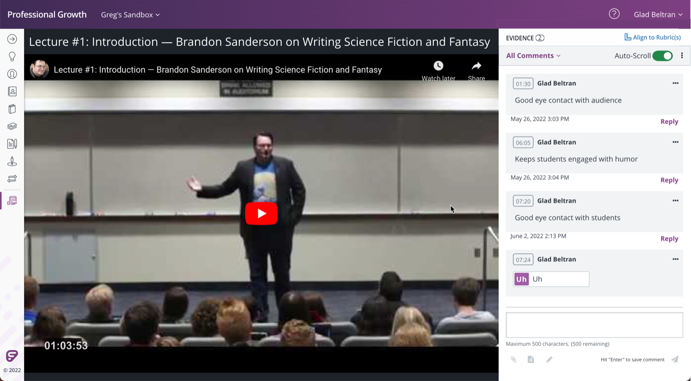
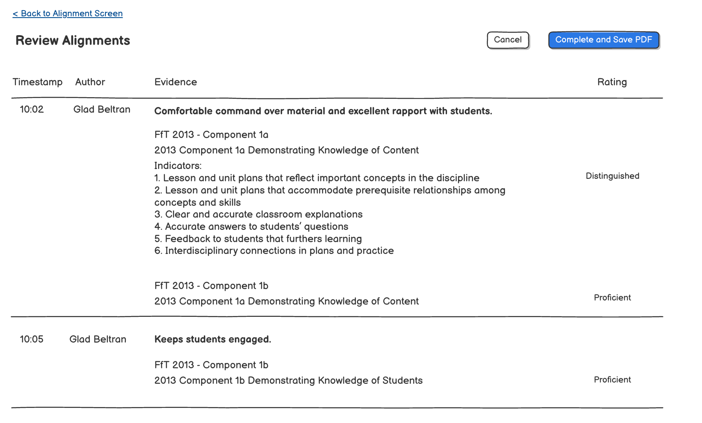
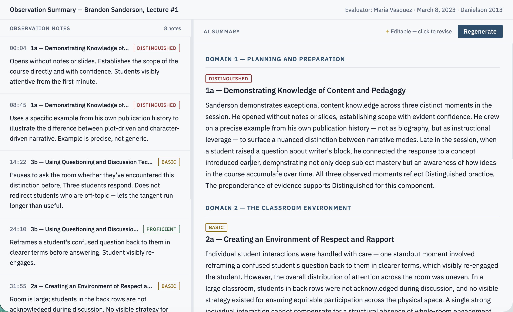

Observation Summary
What an AI layer can and can't own in a high-stakes teacher evaluation workflow.
What this is
In 2022, I shipped a collaborative video feature that let evaluators leave timestamped notes on recorded lessons, align each observation to a rubric criterion, and assign a performance rating. The workflow held together. The output didn't.
When an evaluator hit "Complete and Save PDF," they got a table sorted by timestamp — every observation in the order it was recorded, with the full Danielson indicator language printed underneath each one. A teacher receiving that document had to do the synthesis work themselves.
The AI tooling to fix this didn't exist in 2022. This is the feature the export always needed.
Prototype
A working prototype built in Claude Code demonstrating the core interaction: timestamped observations on the left, AI-generated summary organized by rubric domain on the right, editable before anything goes into the teacher record.
What I Did
- Identified the gap in the original shipped feature and defined the design problem
- Worked through what AI could and couldn't own in a high-stakes evaluation context
- Designed the interaction concept and wrote the prototype brief
- Built a working prototype in Claude Code
Methods
- Domain analysis
- Interaction design
- Prototype (Claude Code)
Tools
- Claude Code
- Figma
The original tool
The collaborative video feature let evaluators watch a recorded lesson and build a structured record as they watched. Timestamped comments captured specific moments. A rubric panel let them align each observation to a Danielson criterion and select a performance level. By the time the video ended, they'd produced a complete set of evidence.

The review screen collected everything into a table: timestamp, evaluator note, rubric alignment, rating. Accurate. Chronological. Then it exported to PDF.

The problem was legibility. A teacher receiving a 12-row table sorted by timestamp had to reconstruct the evaluator's argument themselves. Find all the 3b observations. Notice the two that pointed in different directions. Figure out what the pattern meant for their practice. That's real cognitive work, at the end of a document that was supposed to make things clearer.
The gap
The PDF organized evidence for the evaluator's convenience — chronological order reflects how the notes were taken. It doesn't reflect how a teacher processes feedback, or how an administrator makes a summative judgment.
What both audiences need is the evidence grouped by domain. All the 1a observations together. All the 3b observations together. The pattern across multiple moments visible in one place, so the reader can see what the data actually shows rather than assembling it themselves.
Reorganizing timestamped observations by rubric domain is exactly the kind of work AI does well. The inputs are structured: each note has a timestamp, observation text, criterion alignment, and a rating the evaluator selected. The output is a narrative that preserves all of that, organized around teaching performance rather than lesson timeline.
What AI can and can't own here
Teacher evaluation in K-12 is high stakes. Evaluations inform tenure decisions, remediation plans, sometimes termination. In many states, evaluation frameworks are negotiated with unions. A design that put AI judgment into that process, even subtly, would be a liability.
So I worked through where the line was.
AI can't suggest ratings mid-observation. Anchoring bias is real — an evaluator who sees a suggested score before selecting their own isn't fully exercising their judgment. AI can't flag misaligned evidence in the moment, which would put the tool in an adversarial position with the person using it mid-task. And AI can't generate a summary that introduces language or judgment the evaluator didn't already express.
What's left is the right job: take what the evaluator collected and make it legible in a form the evaluator didn't have time to produce themselves. The AI organizes. The evaluator authors.
The prototype
The prototype is interactive. Open it here →
The interaction is a single moment: the evaluator has finished watching and aligning their notes. Left panel shows the raw observations, exactly as recorded. They click "Generate Summary." The right panel populates with a narrative organized by Danielson domain, written from their own selections.

The summary doesn't flatten mixed evidence. When an evaluator recorded two 3b observations that landed differently — one where discussion went off-track, one where a confused student was re-engaged — the summary says so. That tension is real information. Resolving it into a tidy average would make the document less accurate.
The right panel is editable. The evaluator reads it, revises it, owns it before anything goes into the teacher record. A disclaimer at the bottom makes that explicit: this was generated from their evidence, reflects their ratings, and is theirs to finalize. What gets sent is the evaluator's document.
What's next
The prototype demonstrates the interaction at the point of summary generation. The broader concept extends further: the same structured evidence that produces an individual summary could feed a district-level calibration view, where administrators can see how evaluators across a school are aligning similar evidence to different ratings over time.
That's a separate surface and a separate case to make. The summary prototype is the foundation — and the piece I didn't have the tooling to build in 2022.
Key Takeaways
- The line between AI organizing and AI judging is a design decision. Letting AI suggest ratings or flag misalignment mid-task would put the tool in an adversarial position with the evaluator, in a context where the output has legal and institutional consequences. The design draws the line at synthesis: AI reorganizes what the evaluator collected. The judgment stays human.
- Output format is part of the design. The original tool produced accurate data in an unhelpful order. The gap wasn't in the evidence collection — it was in what happened to the evidence afterward. Reorganizing by domain rather than timestamp is a small structural change with a meaningful impact on how the document gets used.
- Preserving ambiguity is sometimes the right call. When evidence across a criterion pointed in different directions, the summary names that rather than resolving it. A document that reflects the complexity of what was observed is more defensible — and more useful — than one that smooths it into a single rating.